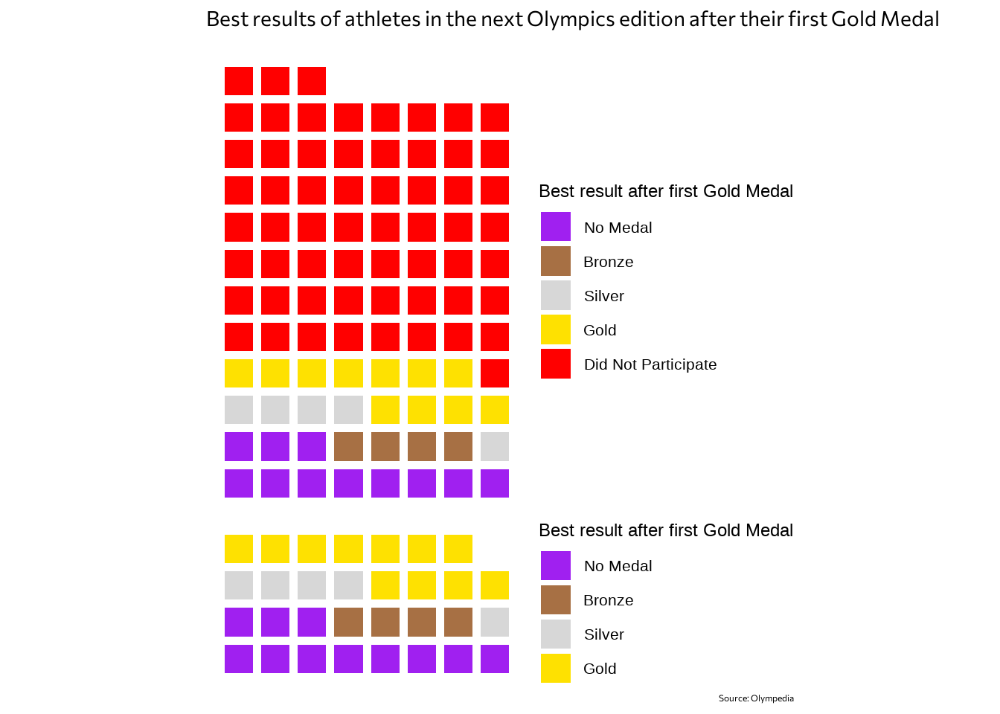
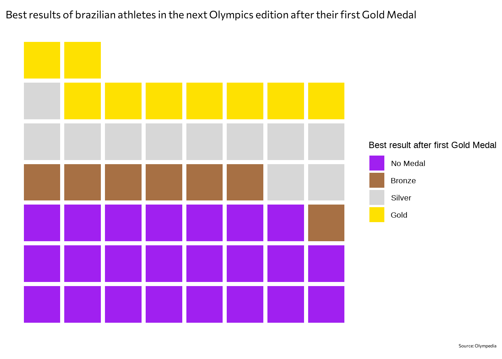

library(tidyverse)
library(showtext)
library(rstatix)
font_add_google("Commissioner", "Commissioner")
showtext_auto()
athlete_result <- read_csv("athlete.csv") %>%
mutate(
edition_year = as.numeric(substr(edition, 0, 4))
) %>%
replace_na(list(medal = "No_Medal"))
athlete_result$medal <- factor(athlete_result$medal, levels = c("No_Medal", "Bronze", "Silver", "Gold"), ordered = TRUE) A Gold Medal in the Olympics is probably the highest an athlete can dream. While watching the 2024 Paris Olympic Games, and looking at some historic data, I tried to ask myself some questions that could be answered through creative data analysis. I thought about some medalists performance throughout multiple Olympic cicles, and asked myself: When athletes win their first Gold Medal, how do they perform in the next Olympics Edition? How often do they keep on the podium? Or do they even compete another edition?
I tried to get some insight using data from Olympedia, downloaded from the brazilian project Base dos Dados.
First things first: we read the data as CSV, extract the year the edition happened, and replace NAs in the Medal column as “No_Medal”. I also ordered the Medal column.
Further on, I filtered the data to have only the Summer Olympics edition, and made a dataset with the first time some athlete won the first gold medal of its career, and also added a value called “Next Edition”, to later on join with the respective result of the next edition.
first_gold <- athlete_result %>%
filter(grepl("Summer", edition)) %>%
filter(edition_year != 2020) %>%
select(edition, edition_year, edition_id, country_noc, sport, athlete, athlete_id, medal, position) %>%
filter(medal == "Gold") %>%
group_by(athlete_id) %>%
slice_min(edition_year) %>%
unique() %>%
mutate(next_ed = edition_year + 4)Finally, I changed the original dataset, calling the “Medal” column “Next Medal”, so I could join that column with the one of the “First Gold” dataset.
next_edition_medals <- athlete_result %>%
select(edition, edition_year, edition_id, country_noc, sport, athlete, athlete_id, medal, position) %>%
subset(athlete_id %in% first_gold$athlete_id) %>%
mutate(next_ed = edition_year) %>%
select(next_ed, athlete_id, medal)
join <- first_gold %>%
left_join(next_edition_medals, by = c("athlete_id","next_ed")) %>%
group_by(athlete_id) %>%
slice_max(medal.y) %>%
unique() %>%
ungroup()
join$medal.y <- addNA(join$medal.y)
levels(join$medal.y) <- c("No Medal", "Bronze", "Silver", "Gold", "Did Not Participate")
df <- join %>%
rename("first_gold" = medal.x, "next_medal" = medal.y)Now the dataset summarises the first time an athlete won a Gold Medal, and then the next edition the athlete participated, and the best result obtained - since some athletes win way more than one medal in one edition. One thing I did not control, however, is whether the athlete won a medal in the same category, or another.
And now to the first plot, I created a Waffle chart, representing what athletes get after winning their first Gold Medals. The squares represent every 100 athletes. The plot on the top shows the general result, counting the athletes who did not participate in the next ediiton of the Olympics. The plot below, ignores those athletes.
library(waffle)
one_a <- df %>%
group_by(next_medal) %>%
summarise(
n = n()/100
) %>%
ggplot(aes(fill = next_medal, values = n)) +
geom_waffle(colour = "white", n_rows = 8, size = 2, flip = TRUE) +
scale_fill_manual(values = c("purple", "#A77044", "#D7D7D7", "#FEE101", "red")) +
labs(
fill = "Best result after first Gold Medal"
) +
theme_void() +
coord_equal() +
theme(legend.text = element_text(size = 16),
legend.title = element_text(size = 18))
one_b <- df %>%
filter(next_medal != "Did Not Participate") %>%
group_by(next_medal) %>%
summarise(
n = n()/100
) %>%
ggplot(aes(fill = next_medal, values = n)) +
geom_waffle(colour = "white", n_rows = 8, size = 2, flip = TRUE) +
scale_fill_manual(values = c("purple", "#A77044", "#D7D7D7", "#FEE101")) +
labs(
fill = "Best result after first Gold Medal"
) +
theme_void() +
coord_equal() +
theme(legend.text = element_text(size = 16),
legend.title = element_text(size = 18))
library(patchwork)
title_one <- "Best results of athletes in the next Olympics edition after their first Gold Medal"
caption_one <- "Source: Olympedia"
plot <- one_a / one_b
plot +
plot_annotation(
title = title_one,
caption = caption_one,
theme = theme(
plot.title = element_text(family = "Commissioner", size = 21),
plot.caption = element_text(family = "Commissioner", 30)
)
) 
Since I’m Brazilian, I also wanted to look to the familiar faces of Brazilian gold medalists. Here, I did not divide the number of athletes by then so each square represents one athlete.
title_two <- "Best results of brazilian athletes in the next Olympics edition after their first Gold Medal"
caption_two <- "Source: Olympedia"
two <- df %>%
filter(next_medal != "Did Not Participate") %>%
filter(country_noc == "BRA") %>%
group_by(next_medal) %>%
summarise(
n = n()
) %>%
ggplot(aes(fill = next_medal, values = n)) +
geom_waffle(colour = "white", n_rows = 8, size = 2, flip = TRUE) +
scale_fill_manual(values = c("purple", "#A77044", "#D7D7D7", "#FEE101")) +
labs(
fill = "Best result after first Gold Medal"
) +
theme_void() +
theme(
legend.text = element_text(size = 16),
legend.title = element_text(size = 18)
) + coord_equal()
two + plot_annotation(
title = title_two,
caption = caption_two,
theme = theme(plot.title = element_text(family = "Commissioner", size = 21),
plot.caption = element_text(family = "Commissioner", 30))
)
Only nine brazilian athletes maintained Gold Medals in the next Olympics edition after their first Gold Medal. They are:
df %>%
filter(next_medal != "no_participation") %>%
filter(country_noc == "BRA") %>%
filter(next_medal == "Gold") %>%
select(athlete, sport)# A tibble: 9 × 2
athlete sport
<chr> <chr>
1 Adhemar da Silva Athletics
2 Fabiana Volleyball
3 Paula Volleyball
4 Thaísa Volleyball
5 Jaque Volleyball
6 Sheilla Tavares Volleyball
7 Fabi Volleyball
8 Kahena Kunze Sailing
9 Martine Grael Sailing That is it for this small exercise. I tried to ask a very objective question, and answer it with good data :)